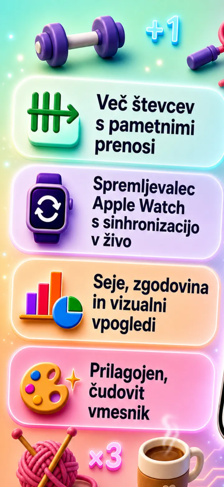
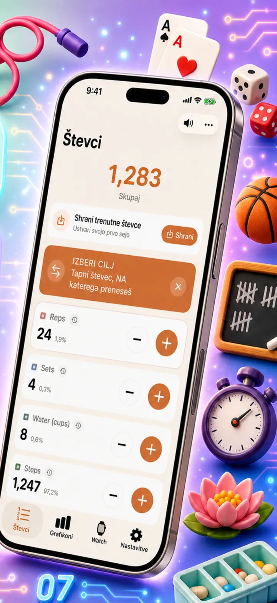
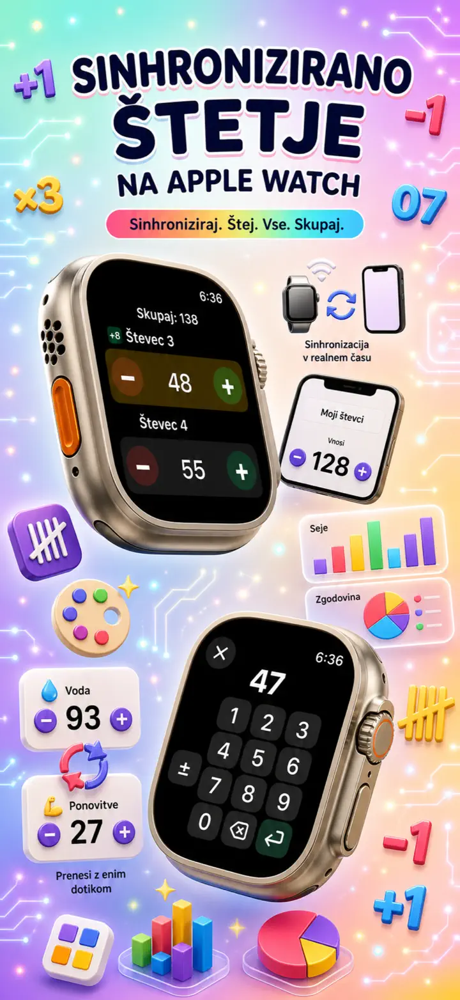
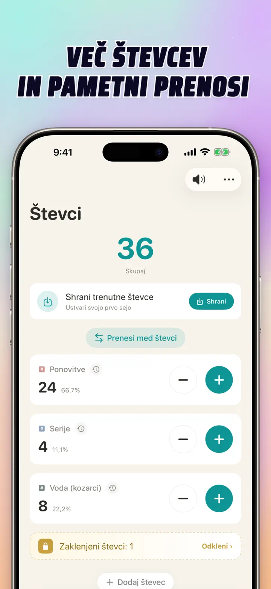
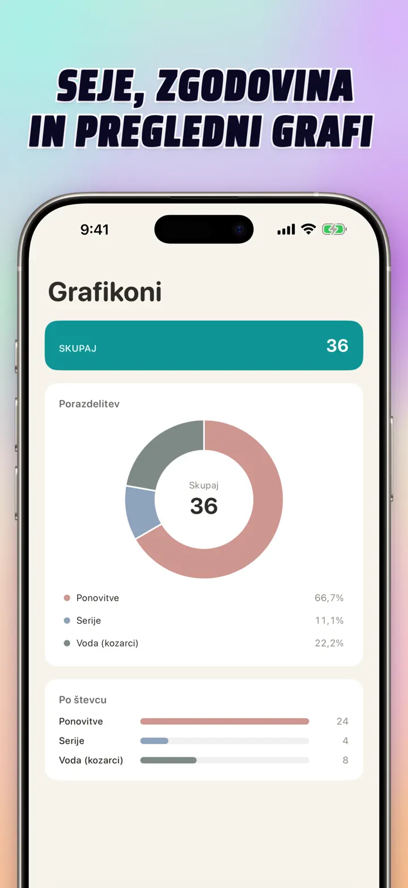
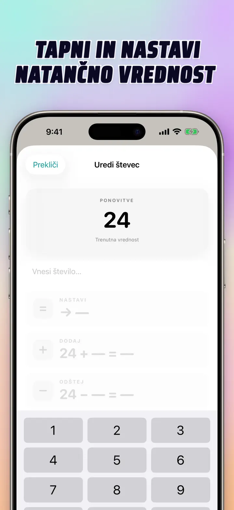
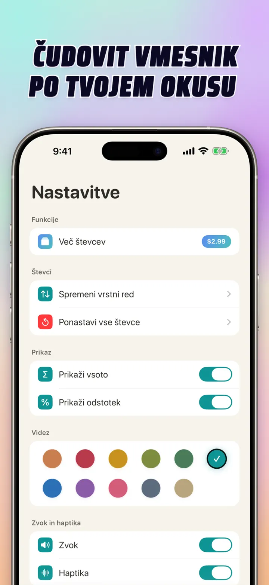
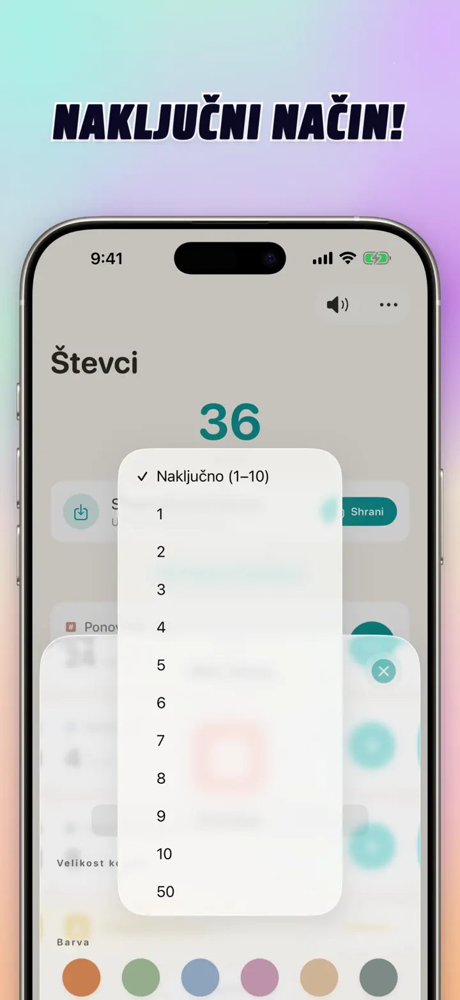

Števec 123
Watch sync, kliki, točke
Novo: pripomočki na začetnem zaslonu — tapni +/- na pripomočku brez odpiranja aplikacije. Števec in klikač z Apple Watch sync, naključni način, grafi, zgodovina.
Prenesi iz trgovine App Store
O aplikaciji
Števec 123 je hiter in prilagodljiv števec za iPhone, iPad in Apple Watch. Poimenuj števce, izberi barvo in štej karkoli — serije v telovadnici, vrstice pletenja, rožni venec, točke v razredu, zalogo, rezultate iger. Vse ostane lokalno na napravi, deluje brez povezave.
PRILAGOJENI ŠTEVCI
- Ustvari ločene števce za aktivnosti, igre, rutine ali sezname
- Lastno ime in barva za vsak števec
- Povleci za preureditev
- Zadrži za hitro zaporedno štetje
- Povsem brez povezave — brez registracije, brez oblaka
NEPOSREDNI VNOS IN MNOŽIČNE OPERACIJE
- Dotakni se števca in nastavi začetno vrednost neposredno — brez ničljenja
- Množično +/-: spremeni števec za poljubno število z enim dotikom
- Prenos: prenesi vrednost iz enega števca v drugega brez dvojne operacije
- Lasten korak: en dotik doda 1, 5, 10, 100 ali kar izbereš
- Sprotni predogled vsake spremembe
NAKLJUČNI NAČIN
- Naj števec ob vsakem dotiku izbere novo vrednost od 1 do 10
- Dodajaj ali odštevaj naključne vrednosti z gumboma + in -
- Uporabno za vaje, igre, nagrade, razredne aktivnosti in rutine
- Vsak naključni dotik se shrani v zgodovino števca
SEŠTEVKI IN GRAFI
- Skupni seštevek vseh števcev na prvi pogled
- Odstotni prikaz: kolikšen je prispevek vsakega števca
- Interaktivni stolpčni graf — preklopi med vrednostjo (#) in odstotkom (%)
- Razvrsti po vrednosti za takojšnjo lestvico
ZGODOVINA IN DELJENJE
- Popolna zgodovina: vsako prištevanje, odštevanje in urejanje je zabeleženo
- Shrani komplete števcev in jih naloži kadar koli
- Deli konfiguracije z ekipo, učenci ali prijatelji
- Zgodovino glej kot dnevni dnevnik, združene seje ali statistiko po dnevu/tednu/mesecu
ŽIVA SINHRONIZACIJA Z APPLE WATCH
- Posodobi števec na iPhonu ali Apple Watchu in vrednosti ostanejo usklajene
- Prava izvorna watchOS aplikacija — ne zgolj spremljevalec
- Imena, barve in vrednosti sinhronizirani na zapestju
- Dotakni se za štetje, zadrži za ponovitev — naravnost z ure
- Deluje samostojno, ko iPhona ni pri roki
ZA iPhone, iPad IN APPLE WATCH
- Prilagodljive postavitve za vsako velikost zaslona
- iPad prikazuje več števcev hkrati, podpira Split View
- Zasebnost na prvem mestu: lokalna hramba, brez oblaka, brez računa
IDEALEN ZA
- Serije in ponovitve v telovadnici
- Vrstice pletenja in petlje kvačkanja
- Rožni venec, tasbih, molilne jagode
- Točke v razredu in prisotnost
- Rokomet, odbojka, košarka — hitri rezultat
- Namizni tenis
- Zaloga in štetje skladišča
- Družabne igre, karte, tarok, remi
- Krogi v bazenu in na progi
- Opazovanje ptic
- Štetje obiskovalcev na dogodkih
- Spremljanje navad in ciljev
Prenesi Števec 123 in vsakdanje štetje naredi enostavno — jasno, hitro, zasebno.
Pravilnik o zasebnosti: https://masawata.net/privacy-policy.html Pogoji uporabe: https://www.apple.com/legal/internet-services/itunes/dev/stdeula/
Posnetki zaslona







Števec 123
Novo: pripomočki na začetnem zaslonu — tapni +/- na pripomočku brez odpiranja aplikacije. Števec in klikač z Apple Watch sync, naključni način, grafi, zgodovina.
Prenesi iz trgovine App Store